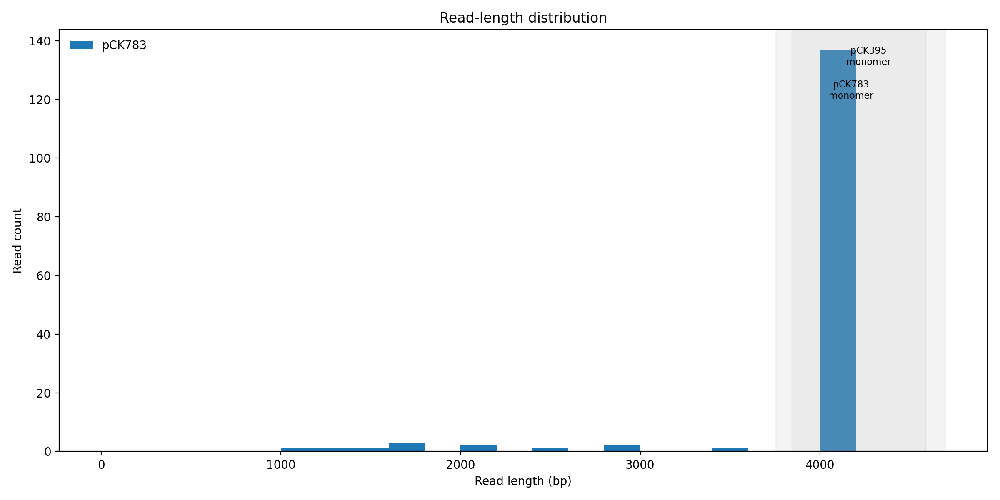
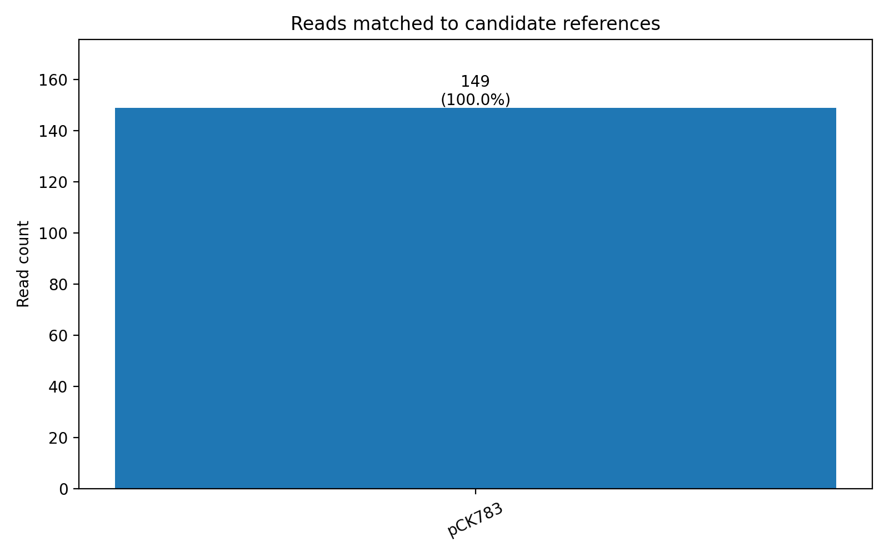
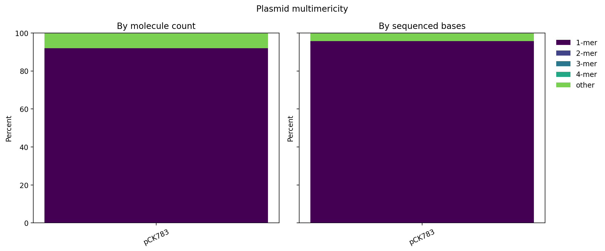

Host-screen status: skipped by user. A host read requires ≥50% query alignment and mapping quality ≥20.


| Assignment | Reads | Percent | Reference length |
|---|---|---|---|
| pCK783 | 149 | 100.0% | 4173 |

| Plasmid | Monomer molecules | Dimer molecules | Monomer mass |
|---|---|---|---|
| pCK783 | 91.9% | 0.0% | 95.8% |
Multimer classes are inferred from read length relative to each candidate reference (±15%). Results are screening metrics, not a substitute for assembly validation.